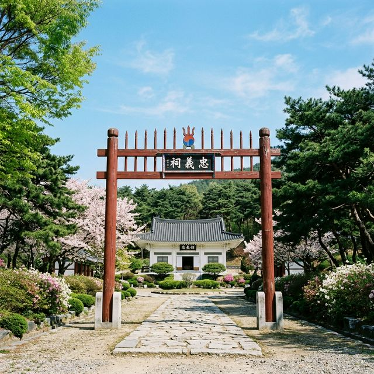
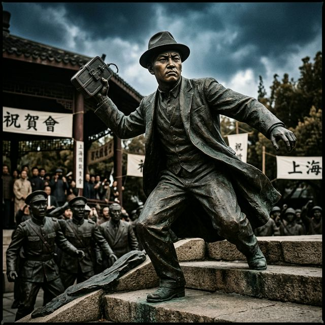
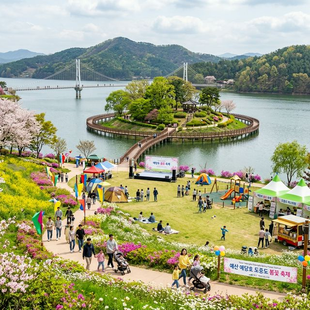

예산 윤봉길 평화축제 2026 미리보기 — 덕산 충의사에서 즐기는 역사 체험과 4월의 평화 산책 코스
찬란한 슬픔의 봄, 예산의 푸른 대지가 독립의 함성과 평화의 메시지로 가득 찹니다. 2026년 4월 25일부터 26일까지 충남 예산 덕산면 충의사 일원에서
'제53회 윤봉길 평화축제'가 개최됩니다. 매헌 윤봉길 의사의 숭고한 나라 사랑 정신을 기리는 이번 축제는, 딱딱한 기념식을 넘어 관람객이 직접 역사 속 주인공이 되어보는
몰입형 공연과 다채로운 체험 프로그램으로 꾸며집니다. 신록이 우거진 충의사 아래에서 평화의 가치를 되새길 수 있는 특별한 주말 여행을 제안합니다.
1. 제53회 윤봉길 평화축제 개최 개요
예산군은 윤봉길 의사의 고향이자 그의 굳건한 평화 사상이 싹튼 장소입니다. 이번 제53회 평화축제는 "윤봉길, 평화의 길을 걷다"라는 주제로 4월 25일 토요일부터 26일
일요일까지 양일간 열립니다. 매년 4월 29일 상해 의거 기념일을 전후해 열리는 이 행사는 세대를 아우르는 역사 문화 축제로 자리매김했습니다.
특히 올해는 대한민국 임시정부의 정신을 잇는 윤 의사의 업적을 더욱 현대적으로 해석했습니다. 단순히 유물을 관람하는 방식에서 벗어나, 디지털 기술과 연극적 요소를 결합하여 젊은 층과 아이들에게 독립 운동의
역사를 쉽고 흥미롭게 전달하는 데 중점을 두었습니다. 예산의 수려한 자연 경관과 역사가 만나는 지점에서 평화의 소중함을 다시금 느껴볼 수 있습니다.

윤봉길 의사의 영정이 모셔진 덕산 충의사 입구의 홍살문과 고즈넉한 봄 풍경 / AI 제작 이미지
2. 축제 주요 프로그램: 몰입형 도슨트 연극
이번 축제의 백미는 이머시브(Immersive) 이동형 도슨트 연극인 <윤봉길 의사의 3가지 이야기>입니다. 전문 배우들이 윤 의사의 어린 시절부터 상해 의거까지의 과정을 생동감
있게 재연하며, 관람객들은 그 뒤를 따라 이동하며 역사의 한 장면 속으로 걸어 들어가게 됩니다. 텍스트로만 접하던 기록이 눈앞에서 살아 숨 쉬는 전율을 경험할 수 있습니다.
연극은 충의사 사당에서 시작하여 생가인 저한당과 도중도(島中島)를 거치며 진행됩니다. 관객들은 단순한 방청객이 아니라 독립 운동의 조력자가 되기도 하고, 윤 의사의 인간적인 고뇌를 함께 나누기도
합니다. 이러한 참여형 연출은 아이들에게는 최고의 역사 교육이 되고, 어른들에게는 뜨거운 감동의 눈물을 선사하는 축제 최고의 킬러 콘텐츠가 될 것입니다.
3. 도중도(島中島): 예산의 숨은 정원과 평화의 섬
축제장의 중심인 도중도는 삽교천 물줄기가 감싸 안은 신비로운 섬입니다. 윤봉길 의사가 청년 시절 농촌 계몽 운동을 펼쳤던 유서 깊은 곳으로, 평소에도 산책로가 잘 정비되어
있어 예산 군민들의 사랑을 받는 곳입니다. 축제 기간에는 이곳이 거대한 평화의 정원으로 변신하여 방문객들을 맞이합니다.
도중도 곳곳에는 윤 의사가 세운 '월진회'의 정신을 기리는 조형물과 함께 봄꽃들이 만발합니다. 강바람을 맞으며 연두색으로 물든 숲길을 걷다 보면 왜 윤 의사가 "강산이 아름다워야 나라가 바로 선다"고
믿었는지 공감하게 됩니다. 돗자리를 챙겨 나무 그늘 아래 자리를 잡으면 가족 피닉 코스로도 손색없는 평화로운 분위기를 만끽할 수 있습니다.
4. 어린이를 위한 역사 놀이터: '상하이로 가는 길'
아이와 함께 방문하는 가족 단위 관람객을 위해 마련된 대형 보드게임 '상하이로 가는 길'은 인기 만점 체험입니다. 바닥에 설치된 거대한 게임판 위에서 주사위를 던지며 독립
운동가들의 행적을 따르고 미션을 해결하는 과정 속에서 자연스럽게 역사를 배우게 됩니다. 놀이와 학습이 결합된 에듀테인먼트의 전형을 보여주는 사례입니다.
또한 AI 기술을 활용한 매헌 사진관에서는 윤봉길 의사와 함께 사진을 찍거나, 당시 독립군 복장을 입어본 듯한 실감 나는 사진을 출력할 수 있습니다. 디지털 세대인
아이들이 과거의 영웅과 소통하는 색다른 방식을 제공하여 역사에 대한 거리감을 좁히는 역할을 합니다. 이러한 체험들을 통해 아이들은 윤봉길이라는 이름을 마음속 깊이 새기게 될 것입니다.

장부의 기개를 담아 상해 의거지로 향하는 윤봉길 의사의 숭고한 결의가 느껴지는 동상 / AI 제작 이미지
5. 특별 전시 <고난의 길>: 유해 송환 80주년 기념
이번 53회 축제에서는 윤봉길 의사 유해 송환 80주년을 기념하는 특별 전시 <고난의 길>이 열립니다. 1932년 순국 후 일본 타카야마 묘지에 버려지듯 묻혔던 유해가
1946년 조국으로 돌아오기까지의 험난했던 여정을 기록한 사진과 문서들이 공개됩니다. 조국의 독립을 위해 목숨을 바친 영웅에 대한 예우가 얼마나 중요한지를 보여주는 전시입니다.
전시실 한편에서는 생전 윤 의사가 사용하던 유품들과 가족들에게 남긴 편지글도 만나볼 수 있습니다. "너희도 만일 피가 있고 뼈가 있다면 반드시 조선을 위해 용맹한 투사가 되어라"라고 적힌
아들들에게 남긴 유서는 읽는 이의 가슴을 먹먹하게 만듭니다. 화려한 행사 뒤에 숨겨진 가슴 아픈 진실을 마주하며 평화로운 현재가 결코 거저 얻어진 것이 아님을
깨닫는 시간이 될 것입니다.
6. 덕산 충의사와 매헌 기념관 투어 가이드
축제의 본 행사 외에도 덕산 충의사 자체를 둘러보는 고택 투어도 추천합니다. 윤 의사가 성장하며 농촌 계몽 활동을 했던 '저한당'과 의거 전 거주했던 '광현당'은
당시 충청도 민가의 모습을 그대로 보존하고 있습니다. 낮게 내려앉은 기와 아래에서 윤 의사가 청년 시절 동지들과 나라의 미래를 의논하던 뜨거운 열기를 상상해볼 수 있습니다.
인근의 매헌 윤봉길 의사 기념관에는 보물 제568호로 지정된 그의 유품들이 전시되어 있습니다. 김구 선생과 바꾼 회중시계부터 피 묻은 손수건까지, 교과서에서만 보던
유물들을 실물로 보는 경험은 아이들에게 강력한 역사적 각인을 남깁니다. 도슨트의 설명을 곁들여 관람하면 숨겨진 비하인드 스토리까지 알 수 있어 더욱 유익한 시간이 됩니다.
7. 4월 29일 상해 의거 기념식 연계 안내
축제는 4월 25일부터 26일까지 열리지만, 진정한 클라이맥스는 4월 29일 상하이 의거 기념일입니다. 이날은 정부 주요 인사와 유가족들이 참석하는 공식 기념식이
별도로 거행됩니다. 축제 기간의 즐거움을 경험했다면, 29일 당일에 다시 방문하여 경건한 분위기 속에서 참배를 올리는 것도 의미 있는 일입니다.
상해 의거를 통해 잠자던 임시정부의 활력을 되찾고 중국의 지원을 이끌어냈던 세계사적 의의를 떠올리며 기념 행사에 참여해보시기 바랍니다. 의거 94주년을 맞는
2026년은 더욱 정중하고 성대한 기념 공연이 예정되어 있습니다. 역사를 기억하는 것은 과거에 머무는 것이 아니라 더 나은 미래를 설계하는 첫걸음임을 현장에서 몸소 느낄 수 있습니다.

윤 의사가 농촌 계몽 활동을 하던 터전인 도중도에 핀 평화로운 봄꽂들과 녹색 정원 / AI 제작 이미지
8. 주변 여행지 연계: 수덕사와 덕산 온천
예산 여행을 더욱 풍성하게 만들고 싶다면 인근의 수덕사를 방문해보세요. 충의사에서 차로 15분 거리에 있는 수덕사는 현존하는 가장 오래된 목조 건축물인 대웅전을
보유한 천년 고찰입니다. 산사 특유의 고요함 속에서 묘현례와는 또 다른 영적인 평온함을 얻을 수 있습니다. 수덕사 산채비빔밥으로 건강한 점심을 즐기는 코스도 인기가 높습니다.
여행의 피로를 풀기에는 덕산 온천이 최고입니다. 예로부터 피부병과 신경통에 효험이 있다고 알려진 덕산 온천은 축제장 바로 인근에 위치해 있습니다. 뜨거운 온천수에
몸을 담그며 예산의 봄 향기를 즐기다 보면 하루의 피로가 씻은 듯 사라집니다. 역사 탐방 뒤에 즐기는 온천욕은 예산만이 줄 수 있는 완벽한 힐링 테라피입니다.
9. 방문객을 위한 주차 및 편의 시설 팁
축제 기간 충의사 주차장은 매우 붐빌 것으로 예상됩니다. 예산군에서는 인근에 대형 임시 주차장을 확보하고 축제장까지 순환 셔틀버스를 운영할 계획이니 안내 요원의
지시를 따르시는 것이 좋습니다. 주차료는 무료이며, 전용 앱을 통해 실시간 주차 가능 공간을 확인할 수도 있습니다.
또한 축제장 내에는 예산의 자랑인 삽다리 쌀과 사과를 활용한 먹거리 장터가 열립니다. 예산 사과 에이드나 사과 파이 등은 아이들이 특히 좋아하는 간식입니다. 4월의
맑은 햇살 아래 장시간 야외 활동을 해야 하므로 선크림과 편안한 운동화는 필수입니다. 나라 사랑의 마음을 품고 떠나는 예산 여행, 윤봉길 평화축제에서 그 뜨거운 감동을 만나보시기 바랍니다.
#윤봉길평화축제
#예산가볼만한곳
#매헌윤봉길의사
#덕산충의사
#독립운동역사투어
#4월축제추천
#도중도산책
#상해의거기념일
#예산여행코스
#아이와가볼만한곳